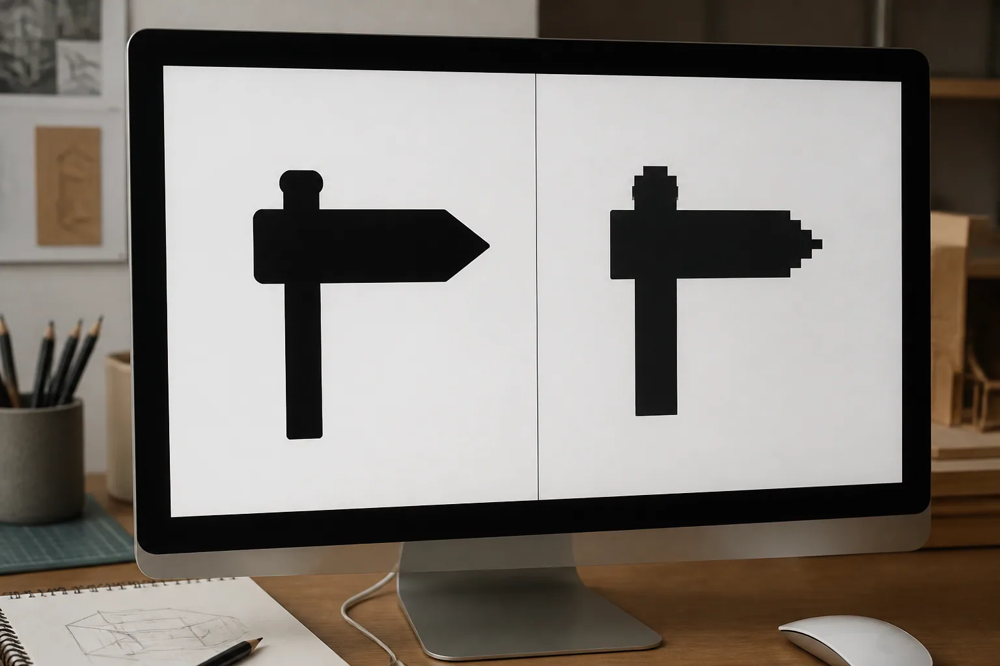
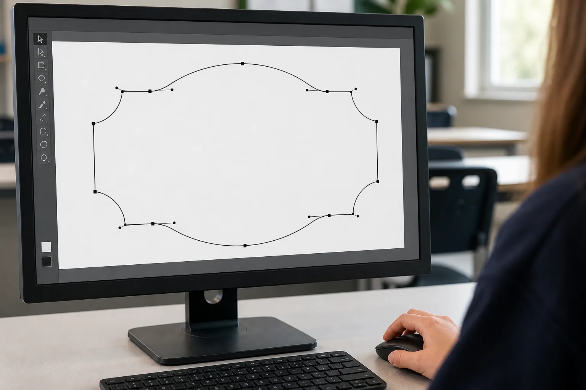
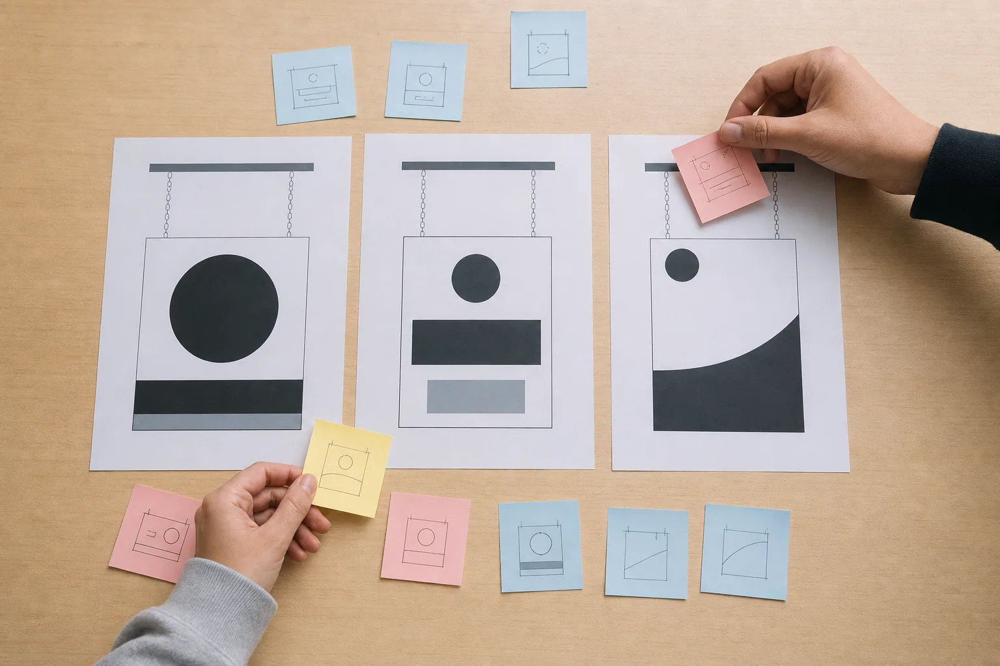

Module 2 PowerPoint
Editable classroom presentation covering all three named learning sections.
Section 1
Vector and bitmap
Explain how vector and bitmap graphics store images, choose an appropriate format for a design purpose, and recognise the limits of automatic tracing.
Success looks like- I can explain pixels, points, paths and scaling in my own words.
- I can choose vector or bitmap for a stated communication purpose and justify the choice.
- I can explain why a traced image still needs checking and teacher approval.
Digital images can look similar on screen while being built in very different ways. Understanding the difference between vector and bitmap graphics helps a designer choose suitable source material, edit shapes more accurately and communicate what a file can and cannot do.
Vector graphics use mathematical paths
A vector graphic is made from objects described by points, lines, curves and shapes. The computer stores the relationships between these parts rather than a fixed grid of coloured squares. When a vector shape is enlarged, the software recalculates the path, so the edge can remain smooth at different display sizes.
Vectors suit logos, lettering, symbols, diagrams and clean silhouettes because individual objects can be selected and edited. A designer can adjust a curve, move a point, change a stroke or reorganise shapes without repainting every tiny part. A vector file is not automatically correct for production; it still needs to respond to the brief and pass the teacher's file-review process.
Bitmap graphics use pixels
A bitmap, also called a raster image, is made from a grid of pixels. Each pixel stores colour information. Photographs are usually represented well as bitmaps because they contain many subtle changes of tone, colour and texture. The number of pixels available affects how much detail the image can show.
When a bitmap is enlarged beyond the detail it contains, individual pixels become more noticeable and edges can look blocky or blurred. Adding display size does not create the missing detail. Bitmap editing often changes groups of pixels, while vector editing changes objects and paths.
Choose the format for the job
Neither format is always better. The question is what the image needs to communicate and what kind of editing is required. A photograph used as a visual reference belongs naturally in a bitmap format. A simple sign silhouette or clean lettering is often easier to develop as vector objects. A presentation might use both: a bitmap photograph to show context and vector shapes to explain an idea.
File extensions can provide clues, but the content matters more than the label. Placing a bitmap inside a vector document does not turn every pixel into an editable path. Likewise, exporting a vector drawing as a bitmap creates pixels for that exported copy. Designers check what is actually in the file rather than relying on its name alone.
Treat tracing as a starting point
Tracing can convert visible boundaries in a bitmap into vector paths, but the result depends on the source image and the settings used. A low-quality or highly detailed source can create too many nodes, uneven contours, tiny gaps, overlapping shapes or unwanted background areas. The traced result may look acceptable at first glance while remaining difficult to edit or unclear as a design.
A responsible workflow checks the traced shape against the design intention. Remove unnecessary complexity, compare positive and negative spaces, test readability, and seek teacher feedback. Copyright and permission also matter: access to an online image does not automatically grant the right to copy or manufacture it. Original artwork and approved sources are safer foundations.
- Vector: objects, points and paths; strong for clean scalable forms.
- Bitmap: pixels; strong for photographs and complex tonal detail.
- Tracing: a conversion attempt that still needs editing and review.
- Approval: a separate local decision; file type alone is not permission to produce.
Key vocabulary
- vector
- a graphic built from mathematically described objects and paths
- bitmap
- a graphic built from a grid of coloured pixels
- pixel
- one small colour element in a bitmap image
- path
- a vector line or boundary controlled by points and curves
- trace
- a process that attempts to convert bitmap boundaries into vector paths
Saving a photograph inside a vector file automatically makes it a clean vector design.
A placed photograph can remain a bitmap object. True vector shapes are described by editable points and paths.
Takeaway: Use vector graphics for editable clean forms, bitmap graphics for pixel-based detail, and judge every conversion by the design purpose rather than the file label.
Local workshop boundary: Your teacher confirms the approved source images, file format, export requirements and review process. This section does not define a machine-ready file.

Video or no-stream pathway
No-stream learning pathway
Zoom detective
Infer whether an image is vector or bitmap by examining structure and editing behaviour.
- Inspect teacher-provided close-ups of two digital images at several zoom levels.
- Circle evidence of pixels on one image and points or paths on the other.
- Match each image to a suitable purpose: photograph, clean symbol or editable lettering.
- Explain one reason the file label alone may be misleading.
Evidence prompt: Choose a format for a clean sign motif and justify the choice using structure, scaling and editing.
Streaming is optional. The pathway above covers the section learning on its own. Open this record in the media library.
Check your understanding: vectors, pixels and suitable formats · 10 questions + one response
Formative learning evidence
Answer all ten questions, use the feedback to revisit exact help, then complete the scaffolded response. Work saves only in this browser.
Higher-order response
Compare vector and bitmap graphics for a design task that needs both a product photograph and clean editable lettering. Recommend how each format should be used and explain one risk of relying on automatic tracing.
Use these prompts
- How is each image type stored and edited?
- Which format suits the photograph and which suits the lettering, and why?
- What could go wrong during tracing, and what checking should follow?
Success criteria
- Accurately compares pixels with points and paths using the stated design task.
- Provides a justified format recommendation and a realistic tracing limitation.
Nothing saved yet.
Section 2
Onshape sketches and features
Explain how an Onshape sketch uses a plane, geometry, dimensions and constraints to capture design intent, then show how a basic feature turns that sketch into a reviewable 3D form.
Success looks like- I can distinguish a sketch plane, sketch geometry, dimensions, constraints and features.
- I can use Onshape's sketch feedback to identify under-constrained, fully constrained and conflicting geometry.
- I can describe a sketch-to-feature workflow that preserves versions and remains ready for teacher review.
Onshape is the drawing and CAD program used for this course. A useful model is not made by random clicking: it begins on an intentional sketch plane, controls geometry with dimensions and constraints, and records each feature so the design can be inspected and revised.
Start in the right place
An Onshape document can contain different work areas. A Part Studio is where parts are created, and a sketch begins on a selected plane or planar face. The plane matters because it establishes the direction from which the sketch is viewed and how later features relate to the model.
Before drawing, identify the intended view and reference. A front, top or right plane is not automatically the correct choice for every idea. Choose the plane that communicates the form clearly, then create only the geometry needed to express the design at that stage.
Control geometry with dimensions and constraints
Sketch entities include lines, arcs, circles and other shapes. Dimensions control size or position. Geometric constraints describe relationships such as horizontal, vertical, coincident, tangent, equal or symmetric. Together they capture design intent so the sketch behaves predictably when it is edited.
A constraint should have a clear job. Add relationships deliberately and test what can still move. Too few controls leave accidental movement; duplicate or competing controls can create a conflict. The goal is a sketch whose behaviour can be explained, not the greatest possible number of symbols.
Read Onshape's sketch feedback
Onshape uses visible feedback to help diagnose a sketch. Blue geometry is under-constrained, black geometry is fully constrained and red indicates a constraint problem. Colour is a useful clue, but it should be combined with a movement check and the displayed constraint information rather than used alone.
When a sketch is under-constrained, identify the movement that remains before adding a control. When a conflict appears, inspect the new and existing relationships instead of deleting controls at random. A controlled sketch is easier for another person to review and safer to revise later.
Turn the sketch into a reviewable feature
A feature uses sketch geometry to create or modify a 3D part. For example, a basic feature can add or remove form, while the feature list records the sequence. Editing an earlier sketch or feature can update later geometry, which is why clear design intent and a readable history matter.
Save meaningful versions before major changes and record what changed after feedback. A convincing model still requires teacher review. Your teacher confirms the document location, units, approved dimensions, drawing requirements, export pathway and whether the proposal may proceed beyond design work.
- Choose a purposeful sketch plane.
- Use dimensions and constraints to express design intent.
- Read sketch feedback and resolve movement or conflicts deliberately.
- Create a basic feature, save a version and present it for review.
Key vocabulary
- sketch plane
- the plane or planar face on which a 2D sketch is created
- constraint
- a relationship that controls how sketch entities behave
- dimension
- a value that controls or reports size or position
- fully constrained
- a sketch state in which the intended geometry has no unintended movement
- feature
- an operation that creates or changes part geometry and is recorded in the feature list
If an Onshape sketch looks right, it is fully controlled.
A sketch can look correct while geometry can still move. Check the sketch state, test movement and inspect the intended dimensions and constraints.
Takeaway: Build the model from an intentional plane, control the sketch with explainable dimensions and constraints, then use features and versions to make the design reviewable.
Local workshop boundary: Follow your teacher's Onshape document, class-folder, sharing, units, naming, drawing, export and approval requirements. CAD evidence does not authorise production.

Video or no-stream pathway
Optional verified clip + complete no-stream pathway
Optional verified clip: Basic Features in Onshape · Onshape · use 0:00–8:15.
Watch for: How do features turn a 2D sketch into or modify a 3D part, and why does the feature list matter when the design changes?
Published by Onshape; checked 2026-09-01. This clip teaches a digital concept only and does not control project, machine or safety facts.
Sketch-constraint-feature check
Connect sketch planes, dimensions, constraints and features in a controlled Onshape workflow.
- Inspect the supplied stills and identify the sketch plane, unconstrained movement and visible geometry relationships.
- Predict which purposeful dimension or constraint would remove each remaining movement, and name one combination that could conflict or duplicate control.
- Trace the sketch-to-feature relationship and explain what would update if the upstream sketch changed.
- Write a short version note and two questions for teacher review.
Evidence prompt: Explain how you would turn one teacher-supplied Onshape sketch into a controlled, reviewable feature without inventing project dimensions or export settings.
Streaming is optional. The pathway above covers the section learning on its own. Open this record in the media library.
Check your understanding: Onshape sketches, constraints, features and review · 10 questions + one response
Formative learning evidence
Answer all ten questions, use the feedback to revisit exact help, then complete the scaffolded response. Work saves only in this browser.
Higher-order response
Apply a reviewable Onshape workflow to a teacher-supplied plaque concept whose sketch can still move, whose dimensions are incomplete and whose first feature has not been checked. Explain the sequence you would use and why.
Use these prompts
- How would you confirm the sketch plane and diagnose the remaining movement?
- Which dimensions or geometric relationships would need teacher-confirmed intent before being applied?
- How would you create or inspect the feature, save a version and present the result for review?
Success criteria
- Uses accurate Onshape terms to connect plane, sketch, dimensions, constraints and feature history.
- Explains a controlled sequence, labels teacher-controlled information and ends at an explicit review checkpoint.
Nothing saved yet.
Section 3
Legibility, annotation and peer review
Use legibility principles, design annotations and criteria-based peer review to communicate and improve an idea.
Success looks like- I can explain how hierarchy, contrast, spacing and negative space influence legibility.
- I can write an annotation that links a feature, reason and expected effect.
- I can give peer feedback that uses criteria and leads to a specific revision.
A design is not fully communicated just because its creator understands it. Another person must be able to read the message, see the important relationships and follow the reasoning. Legibility, annotation and peer review work together: the design communicates visually, the notes explain decisions, and feedback tests whether the intended effect is actually reaching an audience.
Design for legibility
Legibility is the ease with which letters, symbols and important forms can be recognised. It is influenced by type style, spacing, contrast, visual clutter, negative space and the relationship between large and small elements. Visual hierarchy tells the viewer what to notice first, second and third. A clear main message should not have to compete equally with every decorative detail.
Context changes the test. A design viewed briefly or from farther away may need simpler forms and a stronger hierarchy than one studied up close. Designers can use a quick viewing check, a reduced-size preview or a silhouette test to reveal problems. The teacher confirms the appropriate local viewing and production checks; this theory explains why checking matters.
Annotate feature, reason and effect
An annotation is a short note placed near a sketch or design to explain thinking. A label only names a feature: ‘large heading’. A useful annotation adds a reason and expected effect: ‘The heading is visually dominant so the main message is recognised before the decorative motif.’ This makes the decision available for review.
Strong annotations use design language and connect to criteria. They can explain alignment, contrast, proportion, negative space, audience, context or sustainability. They should not pretend that unconfirmed practical details are decided. A note can state ‘mounting relationship to be checked against the teacher-issued plan’ instead of inventing hardware or dimensions.
Use criteria-based peer review
Peer review is most useful when the reviewer responds to the brief and criteria, not personal taste. ‘I like it’ may be friendly but gives little direction. ‘The main word is easy to find because it has strong contrast, but the small motif competes with the second line’ identifies evidence, effect and a possible problem.
A useful feedback pattern is notice, connect, suggest: notice a specific feature; connect it to a criterion or user; suggest a focused next test or revision. The designer listens for patterns across feedback rather than accepting every comment automatically. Different viewers may notice different issues, so the brief remains the decision reference.
Turn feedback into a justified revision
Revision is not failure. It is evidence that the design process is working. The designer records the original choice, feedback received, change considered, change made or rejected, and reason. Sometimes the best decision is to keep a feature because it supports a higher-priority criterion. The important point is that the response is reasoned.
Change one major variable at a time when possible. If lettering, spacing, contrast and motif all change together, it becomes difficult to know what improved legibility. Compare versions using the same criteria and viewing conditions. Then annotate the preferred version so another person can understand the decision trail.
- Hierarchy: what should the viewer notice first?
- Legibility: can the intended message be recognised in context?
- Annotation: what feature, why was it chosen, and what effect is expected?
- Feedback: what evidence links the comment to a criterion?
- Revision: what changed, and did the evidence improve?
Key vocabulary
- legibility
- the ease with which letters, symbols and forms can be recognised
- visual hierarchy
- the order in which design elements attract attention
- annotation
- a note that explains a design feature and its reasoning
- peer review
- feedback from another learner using the brief and criteria
- revision
- a reasoned change made after checking or feedback
Peer review means changing the design to match every classmate's preference.
Feedback provides evidence to consider. The designer decides by returning to the brief, user and ranked criteria.
Takeaway: Make the message readable, annotate the reasoning, ask peers to test the criteria, and revise when evidence shows a better response.
Local workshop boundary: Any mounting, material, minimum-feature or production requirement must come from the teacher-issued plan and review process, not from peer opinion or appearance alone.

Video or no-stream pathway
No-stream learning pathway
Three-second read and annotation check
Test visual hierarchy and improve the explanation of design decisions.
- View a teacher-provided concept briefly, then look away and record what you noticed first, second and third.
- Compare your reading order with the designer's intended hierarchy.
- Rewrite one label as a feature-reason-effect annotation.
- Give one notice-connect-suggest comment linked to a criterion.
Evidence prompt: Record one revision you would test and explain which legibility evidence would show whether it improved the design.
Streaming is optional. The pathway above covers the section learning on its own. Open this record in the media library.
Check your understanding: clear messages, useful annotations and feedback · 10 questions + one response
Formative learning evidence
Answer all ten questions, use the feedback to revisit exact help, then complete the scaffolded response. Work saves only in this browser.
Higher-order response
Evaluate a sign concept that has a clear theme but a crowded message. Recommend one legibility revision, write a feature-reason-effect annotation for it, and explain how peer evidence would be used to judge the revised version.
Use these prompts
- Which feature currently weakens hierarchy, spacing, contrast or negative space?
- What single revision would you test, and how would your annotation explain its purpose?
- What would peers look for, and what evidence would support keeping or changing the revision?
Success criteria
- Uses legibility language to justify a focused revision and a complete feature-reason-effect annotation.
- Explains a fair, criteria-based peer check and how its evidence informs the next decision.
Nothing saved yet.
Module review
Find every learning package
The drawers stay closed until you choose them. Use this checklist to revisit all three directly.
Resume this module